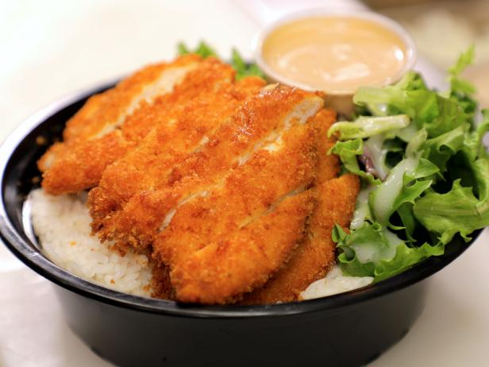

Chicken Katsu!

Description:
Katsu is a Japanese dish of crispy fried cutlets coated with Panko bread crumbs. Popular varieties are chicken katsu (like this recipe) and tonkatsu (which is made with pork).
Ingredients:
- Chicken!
- Seasonings
- Panko
- Egg
- Flour
- Oil
Steps:
- Season the chicken, then dredge in flour.
- Coat each breast in egg, then press into the Panko.
- Fry the chicken katsu until golden brown.
- Enjoy!